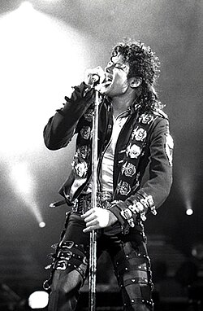
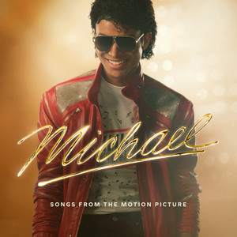
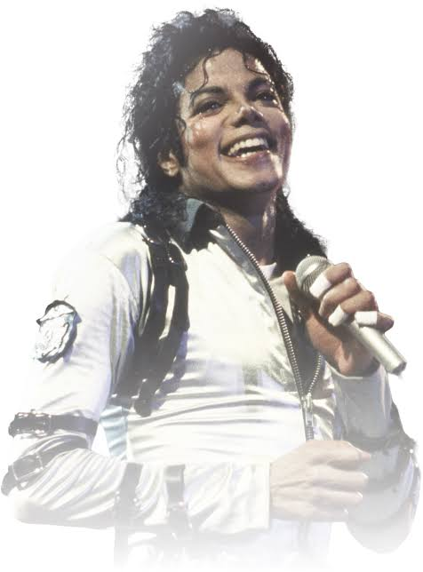
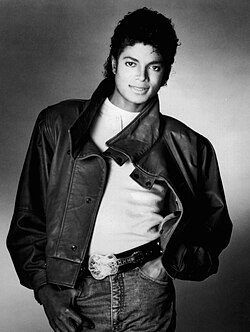
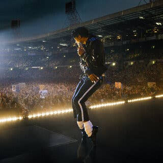

Galería





Música • Legado • Revolución • Inspiración
Premios Grammy
Discos vendidos
Premios y reconocimientos
Influencia mundial
Michael Joseph Jackson (1958 – 2009) fue un cantante, compositor y bailarín estadounidense, coronado mundialmente como el «Rey del Pop». Su genio musical transformó la industria del entretenimiento para siempre.
Comenzó su carrera siendo un niño en los años 60 junto a sus hermanos en los The Jackson 5. Sin embargo, su lanzamiento en solitario lo catapultó al estrellato global, rompiendo barreras culturales y raciales en la radio, la televisión y los escenarios.
Además de sus icónicos pasos como el Moonwalk, Jackson dejó un legado enorme en la filantropía, apoyando causas benéficas y aportando ayuda humanitaria a lo largo de su vida.
“Si entras a este mundo sabiendo que eres amado y dejas este mundo sabiendo lo mismo, entonces todo lo que ocurra en el medio puede ser superado.”
— Michael Jackson
Comienza su historia musical con un grupo que revolucionó el sonido pop y soul de la época.
Su primer gran éxito en solitario abre una nueva etapa y consolida su carrera individual.
Se convierte en el álbum más vendido de la historia y redefine la música pop global.
Rompe récords con cinco sencillos número uno consecutivos y marca una nueva era.
El disco que marcó su madurez musical y consolidó su éxito en solitario con ritmos disco y R&B.
El álbum más vendido de la historia, con himnos que siguen vigentes a nivel mundial.
Una colección explosiva que elevó su fama y consolidó su posición como una leyenda del pop.
Una mezcla innovadora de pop, rock y soul con algunas de sus canciones más emblemáticas.




